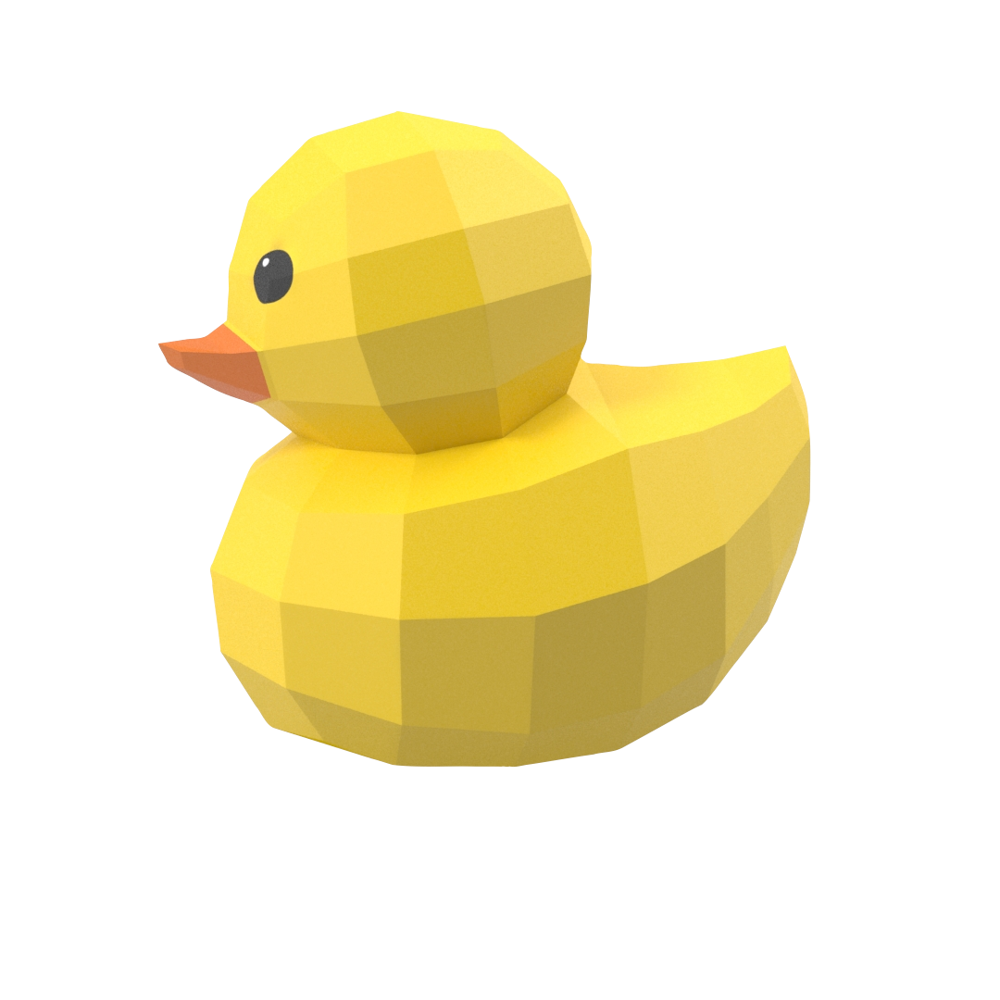

created by Nicky Lin
This is a little simulation that lets you play with ducks!

Here are the selection of buttons available:

| Add a duck |
Creates a little duck that floats across the screen. |
| Clear the ducks. |
Tell the ducks on the screen to go home.
|
| Pause the ducks |
When checked, the ducks on the screen stop and take a nap |
| Lots of ducks |
When checked, the ducks start a protest for animal rights. |
| Path |
Choose a path for the ducks to follow.
|
| Amplitude |
Changes how vertically high the ducks swim.
|
| Period |
Changes how fast the ducks swim.
|